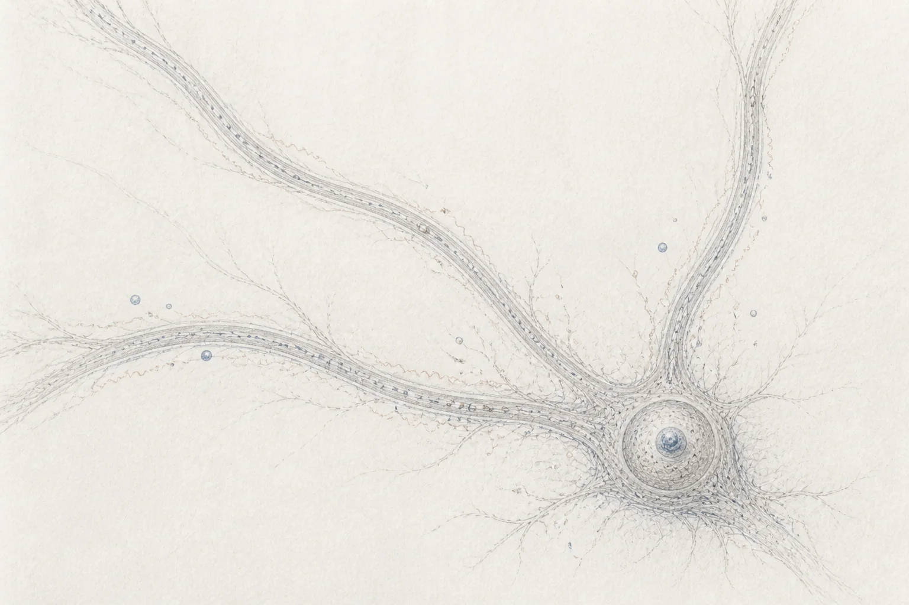

Techniques
To investigate the dynamic life of RNA in neural cells, we employ a powerful suite of modern techniques.

To investigate the dynamic life of RNA in neural cells, we employ a powerful suite of modern techniques.

Our work delves into the specific mechanisms that govern RNA function and fate.
The ultimate goal of our research is to translate mechanistic insights into a deeper understanding of human disease.
Selected publication
EMBO Journal · 2023
Read publication